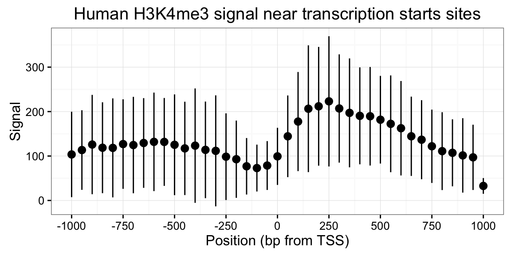

library(valr)
library(dplyr)Intron intervals can be identified by calculating:
genome <- read_genome(valr_example('hg19.chrom.sizes.gz'))
genes <- read_bed12(valr_example('hg19.refGene.chr22.bed.gz'))
exons <- bed12_to_exons(genes)
exons
introns <- bed_subtract(genes, exons)
intronsThis demonstration illustrates how to use valr tools to perform a “meta-analysis” of signals relative to genomic features. Here we to analyze the distribution of histone marks surrounding transcription start sites.
First we load libraries and relevant data.
library(valr)
library(dplyr)
# `valr_example()` identifies the path of example files
bedfile <- valr_example('genes.hg19.chr22.bed.gz')
genomefile <- valr_example('hg19.chrom.sizes.gz')
bgfile <- valr_example('hela.h3k4.chip.bg.gz')
genes <- read_bed(bedfile, n_fields = 6)
genome <- read_genome(genomefile)
y <- read_bedgraph(bgfile)Then we generate 1 bp intervals to represent transcription start sites (TSSs). We focus on + strand genes, but - genes are easily accomodated by filtering them and using bed_makewindows() with reversed window numbers.
# generate 1 bp TSS intervals, `+` strand only
tss <- genes %>%
filter(strand == '+') %>%
mutate(end = start + 1)
# 1000 bp up and downstream
region_size <- 1000
# 50 bp windows
win_size <- 50
# add slop to the TSS, break into windows
x <- tss %>%
bed_slop(genome, both = region_size) %>%
bed_makewindows(genome, win_size)
x
#> # A tibble: 13,530 × 7
#> chrom start end name score strand .win_id
#> <chr> <dbl> <dbl> <chr> <chr> <chr> <dbl>
#> 1 chr22 16161065 16161115 LINC00516 3 + 1
#> 2 chr22 16161115 16161165 LINC00516 3 + 2
#> 3 chr22 16161165 16161215 LINC00516 3 + 3
#> 4 chr22 16161215 16161265 LINC00516 3 + 4
#> 5 chr22 16161265 16161315 LINC00516 3 + 5
#> 6 chr22 16161315 16161365 LINC00516 3 + 6
#> 7 chr22 16161365 16161415 LINC00516 3 + 7
#> 8 chr22 16161415 16161465 LINC00516 3 + 8
#> 9 chr22 16161465 16161515 LINC00516 3 + 9
#> 10 chr22 16161515 16161565 LINC00516 3 + 10
#> # ... with 13,520 more rowsNote that the data are now grouped by .win_id. This grouping is used below with bed_map() to caluclate summary statistics identified by mapping y signals onto the intervals in x. Note that x intervals with no y overlaps have values of NA, so na.rm = TRUE must be used during computation.
# map signals to TSS regions and calculate summary statistics.
res <- bed_map(x, y, win_sum = sum(value, na.rm = TRUE)) %>%
group_by(.win_id) %>%
summarize(win_mean = mean(win_sum, na.rm = TRUE),
win_sd = sd(win_sum, na.rm = TRUE))Finally, these summary statistics are used to construct a plot that illustrates histone density surrounding TSSs.
library(ggplot2)
x_labels <- seq(-region_size, region_size, by = win_size * 5)
x_breaks <- seq(1, 41, by = 5)
sd_limits <- aes(ymax = win_mean + win_sd, ymin = win_mean - win_sd)
ggplot(res, aes(x = .win_id, y = win_mean)) +
geom_point() + geom_pointrange(sd_limits) +
scale_x_continuous(labels = x_labels, breaks = x_breaks) +
xlab('Position (bp from TSS)') + ylab('Signal') +
ggtitle('Human H3K4me3 signal near transcription starts sites') +
theme_bw()